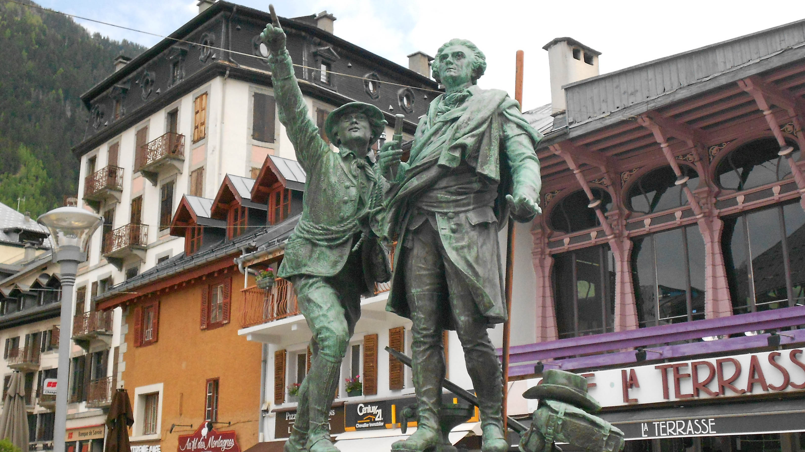

Chamonix
Bienvenue à Chamonix
Mythique et authentique : la Vallée de Chamonix-Mont-Blanc est à l’image de la nature qui l’environne.
Tirée vers le ciel par ses aiguilles et ses massifs légendaires, bordée par sa rivière et ses célèbres glaciers, la Vallée de Chamonix-Mont-Blanc est le berceau naturel d’incroyables aventures. Depuis toujours, c’est ici que les pionniers partent à la conquête des sommets et écrivent l’Histoire de la Montagne.
La Vallée de Chamonix-Mont-Blanc se réinvente chaque jour et vous invite à vivre votre propre aventure.
Tirée vers le ciel par ses aiguilles et ses massifs légendaires, bordée par sa rivière et ses célèbres glaciers, la Vallée de Chamonix-Mont-Blanc est le berceau naturel d’incroyables aventures. Depuis toujours, c’est ici que les pionniers partent à la conquête des sommets et écrivent l’Histoire de la Montagne.
La Vallée de Chamonix-Mont-Blanc se réinvente chaque jour et vous invite à vivre votre propre aventure.

Église de Chamonix

Centre ville de Chamonix
Un peu d'histoire
Au XVIIIème siècle, le village vit de l’agriculture, malgré les difficultés que représente l’exploitation agricole dans un environnement aux hivers longs et rigoureux.
En 1741, deux Anglais : William Windham et Richard Pocock, partent à l’aventure dans la vallée. Ils découvrent le glacier des Bois. Fascinés par cette étendue de glace, ils lui donnent son nom actuel : la “Mer de Glace”.
Émerveillés par leur expédition, ils rentrent à Londres où ils détaillent leur voyage dans diverses gazettes littéraires. Dès lors, les aventuriers du monde entier veulent eux aussi observer les merveilles de ce territoire mystérieux, entraînant le développement du tourisme à Chamonix-Mont-Blanc.
En 1741, deux Anglais : William Windham et Richard Pocock, partent à l’aventure dans la vallée. Ils découvrent le glacier des Bois. Fascinés par cette étendue de glace, ils lui donnent son nom actuel : la “Mer de Glace”.
Émerveillés par leur expédition, ils rentrent à Londres où ils détaillent leur voyage dans diverses gazettes littéraires. Dès lors, les aventuriers du monde entier veulent eux aussi observer les merveilles de ce territoire mystérieux, entraînant le développement du tourisme à Chamonix-Mont-Blanc.

Jacques Balmat et H.B. de Saussure
Jacques Balmat et H.B. de Saussure
En 1760, le savant genevois, Horace Bénédict de Saussure offre une récompense à qui atteindra le mont Blanc. Le 8 août 1786, Jacques Balmat et Michel Paccard, tous deux originaires de Chamonix-Mont-Blanc, ouvrent la voie. Un an plus tard, de Saussure parvient lui-même au sommet avec l’aide de Jacques Balmat.
L’arrivée de ces explorateurs change rapidement la vie des chamoniards. Les expéditions se déroulent exclusivement l’été et des paysans locaux deviennent guides ou hôteliers, au moins une partie de l’année.
L’arrivée de ces explorateurs change rapidement la vie des chamoniards. Les expéditions se déroulent exclusivement l’été et des paysans locaux deviennent guides ou hôteliers, au moins une partie de l’année.
Les Houches
Panorama exceptionnel
Le village des Houches offre un panorama exceptionnel sur l'Aiguille du Midi et les Aiguilles de Chamonix.Le tramway du Mont-Blanc, un des derniers trains à crémaillère de France, passe sur les hauteurs de la commune. Son terminus estival, le Nid d’Aigle, situé à 2372 mètres d’altitude, est le départ de la voie “normale” pour l’ascension du mont Blanc.
En hiver, le train termine sa course sur le plateau de Bellevue à 1800 mètres d’altitude. Il y dépose les piétons souhaitant se promener à pied ou en raquettes à neige, et les skieurs qui profitent du domaine skiable, de la vue et du soleil.
En hiver, le train termine sa course sur le plateau de Bellevue à 1800 mètres d’altitude. Il y dépose les piétons souhaitant se promener à pied ou en raquettes à neige, et les skieurs qui profitent du domaine skiable, de la vue et du soleil.

Tramway du Mont Blanc à Bellevue
Village des Houches de nuit
Le village des Houches
Comme souvent dans la vallée, le nom “Les Houches” est un toponyme. Il viendrait d’une racine qui signifie “terres cultivées” et aurait été utilisé pour la première fois au XIVème siècle.
L’orientation de son domaine skiable fait des Houches une station de ski prisée pour la qualité de sa neige. Ses pentes agréables permettent aux skieurs de tous niveaux d’y jouer des spatules. Les Houches cache également une descente de renommée mondiale, la légendaire épreuve de Coupe du Monde de ski : le Kandahar.
L’orientation de son domaine skiable fait des Houches une station de ski prisée pour la qualité de sa neige. Ses pentes agréables permettent aux skieurs de tous niveaux d’y jouer des spatules. Les Houches cache également une descente de renommée mondiale, la légendaire épreuve de Coupe du Monde de ski : le Kandahar.